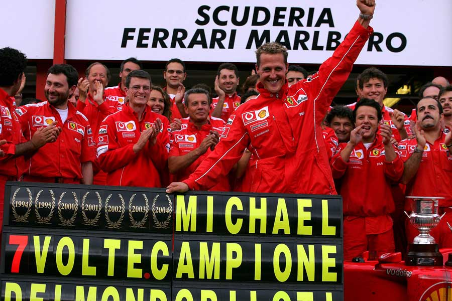

For Schumacher
Acumuló 91 victorias, 68 poles, 77 vueltas rápidas y 155 podios, superando los números de Alain Prost, quien ostentaba dichos récords en la década de los 90. Salvo las vueltas rápidas, esos récords fueron batidos por Lewis Hamilton en 2020
